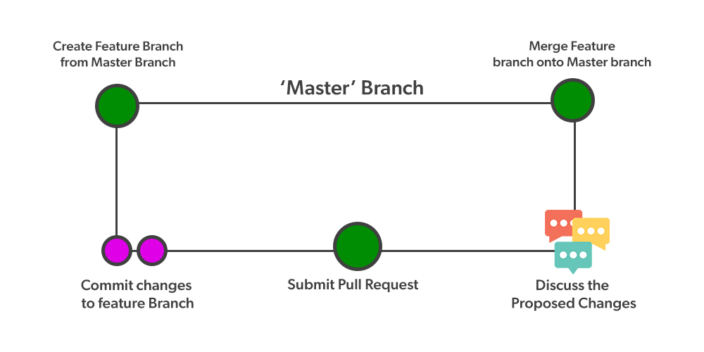

Github flow är en arbets plats som man kan :
- skappa en ny fil.
- Öppna en pullrequest.som man kan arbeta tillsammans med andra.
- Gör ändring
- De som jobbar tillsammans de kan göra ändring också 
Flexbox är en inbyggd metod i css och de inbyggd i moderna webblässare .
DOM är Document Object Model :Den definierar den logiska formen och hur man kommer åt ett dokument och hanterar det. kan vi inte bara läsa ifrån DOM:en, utan vi kan även förändra den